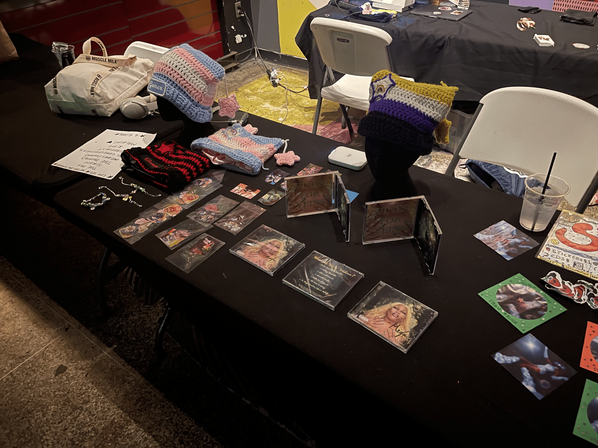
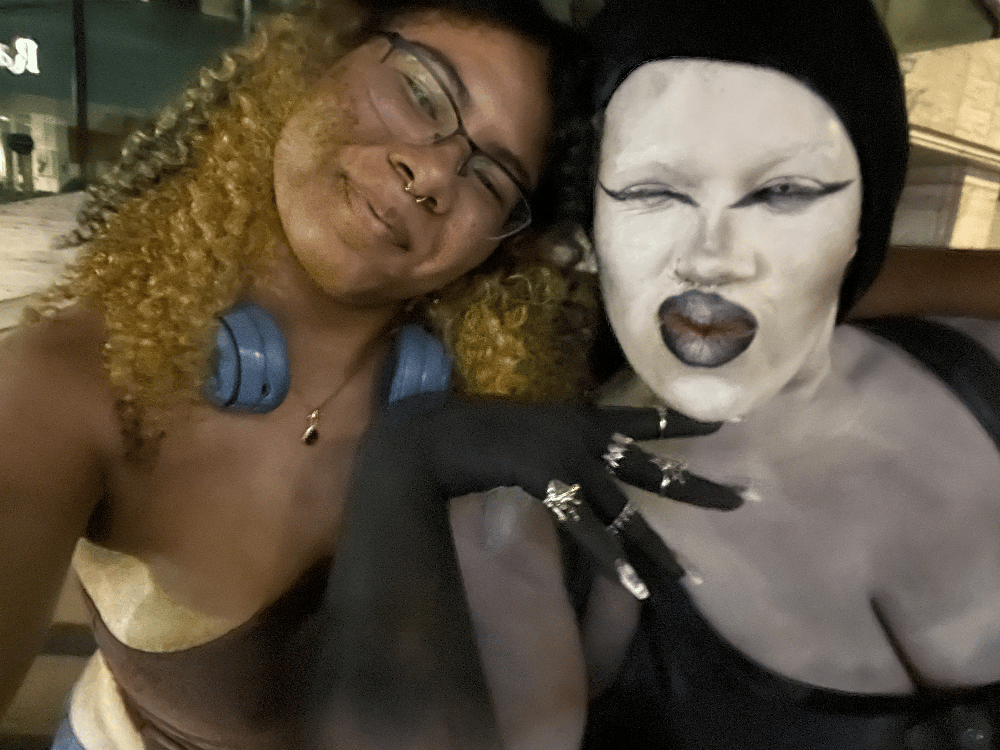
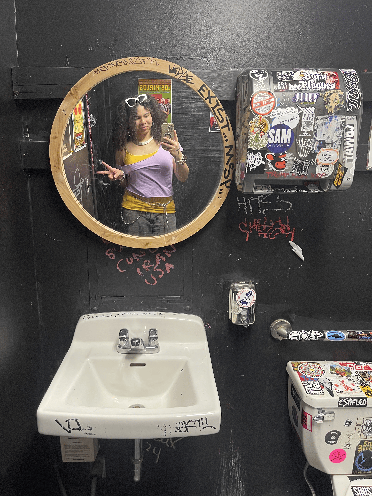

For the past two years I have been singer/songwriter MegaGoneFree’s Personal Assistant. My primary duties include moderating their online communities, running their merchandise stand on tour, and administrative tasks. I have also designed, developed, and maintained a website for them. When needed, I have also been their photographer, videographer, and graphic designer. Whatever tasks you can think of that are necessary to set a musician up for success, you name it, I have probably done it.


